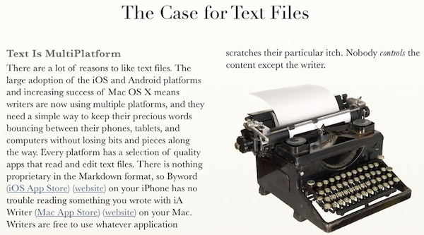

Image: a photo of a typewriter and the case for plain text
Teaching Innovation Project
Aim: "A standard template and guide for a system to generate module handbooks in .epub and .mobi formats (iPhone/iPad, Android, Kindle), and PDF, from a single plain-text document using free services and software, including LeanPub."
contact: deveritt@dmu.ac.uk
Learning materials
From Markdown, you can generate…
HTML
Word
PDF
e-books
web-based presentations (Powerpoint not accessible/web-friendly)
…from single or few text-based source document(s), then you can fiddle with the formatting.
Fighting lock-in
(suitable clickbait graphic here)
Office suite developers hate this Melton Mowbray lecturer!
One secret trick Microsoft and Apple don't want you to know!
QUERTY
The QUERTY keyboard prevented typists locking up from going too fast, but has itself become locked-in
The most popular isn't always the best. Office suites are from the 80s. The web and semantically-structured text is the ideal delivery platform.
No lock-in!
Free yourself from applications and their compatibilities!
Your text doesn't depend on any proprietary software!
Generate proprietary formats if you need/must!
Plain text formats
Lightweight, small file sizes e.g. .md or .txt vs .ppt
No software version incompatibility (e.g. old Word can't open new Word)
The aim is to make it easy to read, write, and edit prose. HTML is a publishing format; Markdown is a writing format…
easy to sharing between devices/people
Unlike cumbersome word processing applications, text written in Markdown can be easily shared between computers, mobile phones, and people. It’s quickly becoming the writing standard for academics, scientists, writers…
Formatting text in Markdown has a very gentle learning curve. It doesn’t do anything fancy like change the font size, color, or type. All you have control over is the display of the text… making things bold, creating headers, and organizing lists."